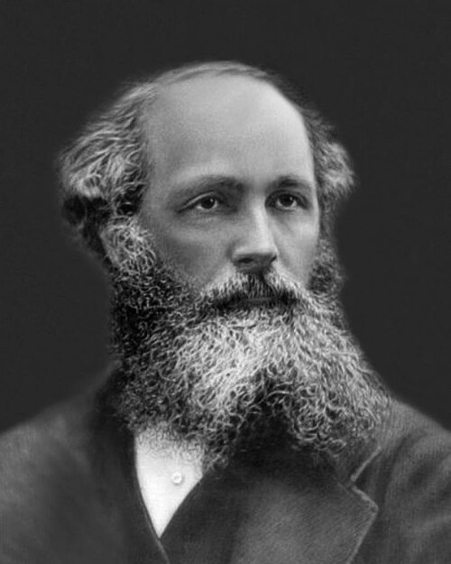

Impedancia del vacío
Derivada medida Símbolo: Z₀
Incertidumbre estándar: 0,000 000 059 Ω
Personas e ideas
Hito histórico: siglo XIX · ondas electromagnéticas
Z₀ es una combinación de las constantes electromagnéticas, no una nueva interacción.

Los retratos anteriores a la fotografía son pinturas o grabados; los créditos identifican su procedencia. La fecha del hito no es necesariamente la de la primera medición precisa.
Dónde aparece
Si su valor cambiara
No es un parámetro independiente: su variación está ligada a las constantes de las que deriva. No tiene un umbral propio de colapso cósmico. Modifica la relación numérica E/H en una onda; para discutir otro universo hay que especificar α y las convenciones eléctricas.
Retroceso atómico de rubidio
Año: 2020
Autores: Léo Morel, Zhibin Yao, Pierre Cladé y Saïda Guellati-Khélifa.
Saïda Guellati-Khelifa: retrato reutilizable no disponible en esta edición. Ver perfil oficial.
Esta constante se obtiene de otras magnitudes mediante las relaciones indicadas en la ficha. No se midió de forma independiente en este experimento.
La incertidumbre del valor actual aparece arriba. Las correlaciones del ajuste CODATA impiden combinar sin más todos los errores como si fueran independientes. Para una combinación exacta de constantes definitorias, la incertidumbre de definición es cero.
Consultar la fuente original ↗Fuentes de la ficha
- Publicación del experimento o fuente histórica
- CODATA 2022 · valores, ajuste y correlaciones
- Sistema Internacional · definiciones
Consulta editorial: 28 de septiembre de 2026. El experimento elegido es representativo; no se presenta como la única medición ni necesariamente como la más reciente.